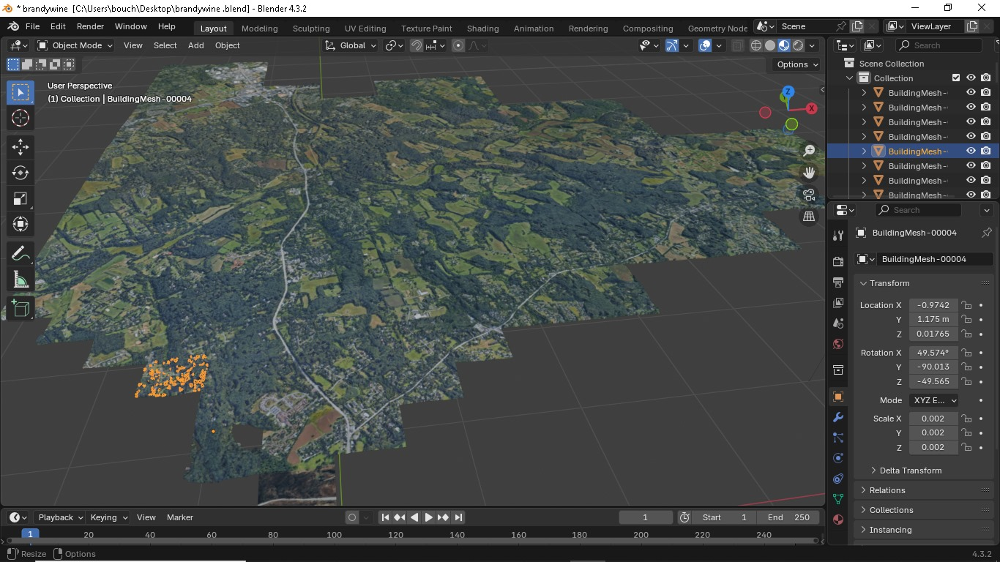
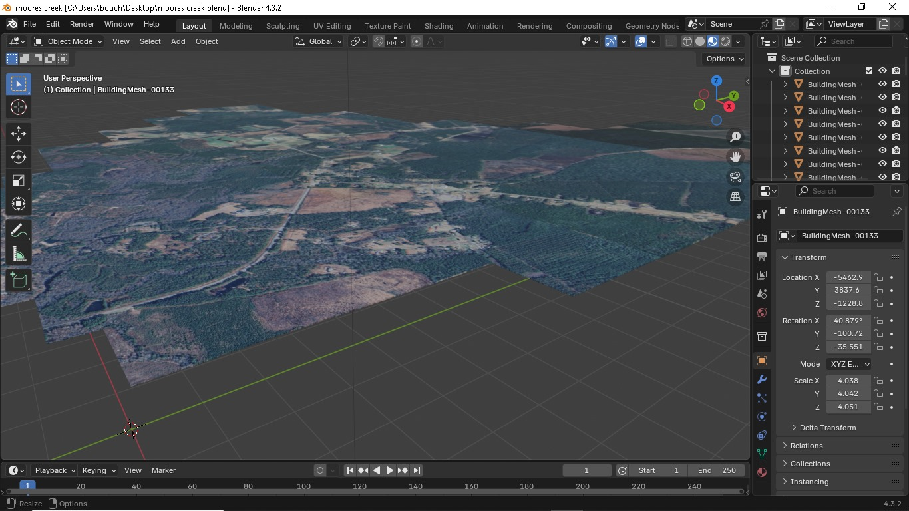
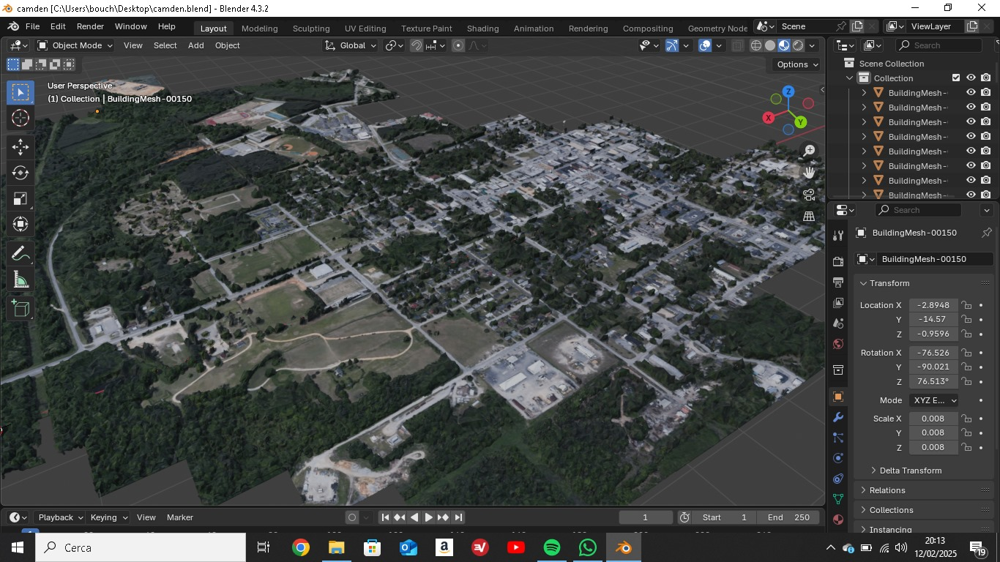

Timeline degli Eventi
1765 - Stamp Act
Il Parlamento britannico impone una tassa su tutti i documenti legali e le pubblicazioni nelle colonie americane. Questa decisione scatena un'ondata di proteste e segna l'inizio del malcontento verso la Corona britannica.
1770 - Il Massacro di Boston
Le crescenti tensioni tra coloni e soldati britannici culminano in un tragico scontro. I soldati aprono il fuoco sulla folla di civili, uccidendo cinque persone e ferendone sei. Questo evento diventa un simbolo della tirannia britannica.
1773 - Boston Tea Party
In una notte di dicembre, i coloni, travestiti da nativi americani, gettano nel porto di Boston 342 casse di tè britannico. Questa protesta contro la tassazione senza rappresentanza diventa uno degli eventi più iconici della Rivoluzione.
1776 - Dichiarazione d'Indipendenza
Il 4 luglio, il Congresso Continentale approva la Dichiarazione d'Indipendenza, scritta principalmente da Thomas Jefferson. Questo documento storico sancisce la nascita degli Stati Uniti d'America come nazione indipendente.
Eroi della Rivoluzione

George Washington
Comandante dell'Esercito Continentale e primo Presidente degli Stati Uniti. La sua leadership militare e politica fu fondamentale per il successo della rivoluzione e la nascita della nuova nazione.

Benjamin Franklin
Diplomatico, scienziato e uno dei Padri Fondatori. Il suo ingegno e la sua abilità diplomatica furono cruciali per ottenere il supporto francese durante la guerra d'indipendenza.

Thomas Jefferson
Autore principale della Dichiarazione d'Indipendenza e futuro presidente. Le sue parole immortali sulla libertà e l'uguaglianza hanno ispirato movimenti per i diritti civili in tutto il mondo.
Testi Storici
Le tredici colonie atlantiche del Nord America
Fin dal Cinquecento l'Inghilterra aveva avviato la colonizzazione dell'America
Settentrionale. Dopo i primi tentativi fallimentari, gli anglosassoni fondarono
sull'Atlantico le tredici colonie. La popolazione arrivò a superare i due milioni di
abitanti poco dopo la metà del Settecento. Alla crescita demografica si era
accompagnata l'espansione territoriale e l'inizio della colonizzazione dall'entroterra.
L'aspetto drammatico di questa espansione demografica e territoriale fu il confronto
con i nativi, considerati "pellerossa", cacciatori nomadi che avevano fondato una
civiltà basata sul rispetto religioso della natura. I difficili scontri con gli europei
disapprovano l'uso intensivo della terra da parte degli "uomini bianchi" e si
opponevano senza meno alla progressiva sottrazione di territori che l'avanzata dei
coloni comportava. Fra il XVII e il XVIII secolo l'Inghilterra si arricchì, approfittando
delle loro rivalità, stipulando alleanze con numerose tribù indigene, in cambio della
promessa di dichiarazioni, forniture di armi o garanzie territoriali, e scatenando
guerre fratricide da cui traevano profitto solo loro, i conquistatori bianchi.
L'intraprendenza e la combattività dei coloni americani derivano dalle particolari
circostanze in cui le colonie stesse avevano avuto origine. In alcuni casi, infatti,
erano nate per dare rifugio a minoranze religiose perseguitate, come quella dei Padri
Pellegrini, puritani emigrati dall'Inghilterra per fuggire alle persecuzioni degli Stuart.
La Pennsylvania era invece, dallo slancio utopistico di William Penn, un quacchero
che intendeva realizzare nel Nuovo Mondo una sorta di stato.
Le tredici colonie avevano strutture economiche e sociali molto diverse tra loro.
Le quattro colonie settentrionali del New England (Massachusetts, Rhode Island,
Connecticut e New Hampshire) erano state fondate tra il 1620 e il 1688 da gruppi di
dissidenti religiosi provenienti dall'Inghilterra e mantenevano una certa omogeneità
etnica e confessionale, con un forte attaccamento alle tradizioni puritane. Lo
sviluppo dell'immenso patrimonio boschivo e la presenza di centri portuali come
Boston resero consentita la nascita di un'industria cantieristica, che produceva il 50%
dell'intera flotta inglese. Molto diffusi erano anche la pesca e il commercio.
Le quattro colonie centrali (New York, New Jersey, Pennsylvania, Delaware) erano
invece state fondate su precedenti insediamenti olandesi e svedesi e, quindi, erano
caratterizzate da una popolazione più composita. Queste aree furono presto
interessate dalla costituzione di grandi concentrazioni latifondistiche che
produssero una differenziazione sociale più netta rispetto ad altre colonie. I ricchi
commercianti e banchieri rappresentarono le categorie dominanti, insieme ai grandi
proprietari terrieri. Prosperose città come Philadelphia e New York videro ben presto
emergere un ricco ceto mercantile e una borghesia delle professioni.
Al Sud sorgevano cinque colonie (Virginia, Maryland, Carolina del Nord, Carolina del
Sud e Georgia), qui la fertilità dei terreni aveva favorito la nascita di grandi
piantagioni di tabacco, riso e cotone coltivate ricorrendo al lavoro di numerosi
schiavi di origine africana (nel 1763, su 350.000 neri che vivevano in Nord America,
ben 280.000 si trovavano in quest'area). La classe dirigente era composta
esclusivamente da grandi proprietari terrieri e le attività industriali e commerciali
erano quasi del tutto assenti.
Le opportunità della vita nelle colonie
Le tredici colonie si distinguevano per il loro notevole dinamismo economico, sociale
e culturale, soprattutto se paragonate alle società europee dell'epoca, spesso
vincolate da rigide strutture aristocratiche. L'America rappresentava il continente
delle opportunità, offrendo la possibilità di ottenere terra da coltivare e di arricchirsi,
attirando un flusso costante di emigranti dall'Europa.
A differenza dell'Europa, l'assenza di un'aristocrazia ereditaria permetteva una
notevole mobilità sociale. Chi possedeva capacità imprenditoriali poteva scalare la
società più rapidamente. Questa maggiore uguaglianza si rifletteva anche nelle
forme di autogoverno, con autonomie concesse dall'Inghilterra a ogni colonia, a
condizione che si sottomettessero all'autorità del Parlamento britannico, dove però
non avevano rappresentanza. Ogni colonia era amministrata da un governatore
nominato dal re, affiancato da un'assemblea eletta dai cittadini locali, con un diritto
di voto più esteso rispetto all'Inghilterra.
Oltre al dinamismo sociale ed economico, le colonie vantano una grande vivacità
culturale. Nel Settecento, sorsero prestigiose università come Harvard, Princeton e
Yale, formando una classe intellettuale influenzata dalle idee illuministiche, come i
diritti naturali e la libertà di Locke. Figure come Benjamin Franklin, giornalista,
inventore (parafulmine) e protagonista della lotta per l'indipendenza, e Thomas
Jefferson, estensore della Dichiarazione d'Indipendenza e futuro Presidente degli
Stati Uniti, incarnavano questo fermento culturale e l'adesione ai principi illuministici.
Jefferson, proveniente da una famiglia benestante, era un appassionato studioso di
diritto, letteratura, storia, matematica e filosofia, e si impegnò precocemente per
l'indipendenza delle colonie.
La ribellione e la Dichiarazione d'Indipendenza
L'Inghilterra applicava un rigido sistema mercantilistico alle colonie, limitando il loro
sviluppo commerciale e produttivo a vantaggio dell'industria inglese. Le colonie
potevano solo fornire materie prime e commerciare esclusivamente con l'Inghilterra
a prezzi imposti. Nonostante il contrabbando, la situazione cambiò dopo la guerra
dei Sette anni.
L'Inghilterra intensificò il controllo sui territori coloniali, vietando ulteriori
insediamenti oltre i monti Appalachi (Proclamation Line, 1763) e introducendo nuove
tasse per risanare il bilancio statale. Lo Sugar Act (1764) e lo Stamp Act (1765)
aumentarono il malcontento. Il Congresso dei delegati coloniali protestò contro la
tassazione senza rappresentanza parlamentare. Lo Stamp Act fu revocato, ma
nuove tasse aumentarono la tensione, portando a boicottaggi organizzati da
associazioni segrete come i "Figli della libertà".
La tensione esplose con il "massacro di Boston" (1770) e il "Boston Tea Party"
(1773), in risposta al Tea Act che concedeva il monopolio del tè alla Compagnia delle
Indie. Il Primo congresso continentale (1774) decise il boicottaggio economico. Nel
1775 iniziarono gli scontri armati a Lexington.
Il Secondo congresso continentale (1775) istituì un esercito guidato da George
Washington. Intellettuali come Thomas Paine, con il suo Senso comune,
contribuirono a radicalizzare le posizioni a favore dell'indipendenza.
Il 4 luglio 1776, il Secondo congresso approvò la Dichiarazione d'indipendenza,
redatta da Thomas Jefferson, che dichiarava la costituzione delle colonie negli Stati
Uniti d'America, basandosi sui diritti naturali di libertà e ricerca della felicità. La
guerra entrò nel vivo e, nel 1781, i coloni sconfissero gli inglesi con l'aiuto di Francia,
Spagna e Olanda.
La guerra d'Indipendenza
La guerra d'indipendenza americana si svolse tra il 1775 e il 1783, quando le colonie
americane ribelli si opposero alla Corona britannica. Inizialmente, l'esercito
britannico, meglio preparato e numericamente superiore, prevaleva sui coloni, che si
organizzavano in un esercito di volontari guidati da George Washington. Tuttavia, i
ribelli beneficiarono del supporto militare ed economico di Francia, Spagna e Olanda,
che avevano interesse a indebolire la Gran Bretagna, sia per ragioni politiche che
economiche.
Il conflitto, che può essere visto come una guerra civile tra americani, si inseriva in
un più ampio dibattito intellettuale sull'autodeterminazione e sul futuro dei governi
assoluti. Personaggi come Benjamin Franklin e il marchese de La Fayette giocarono
un ruolo importante, offrendo il loro supporto alla causa indipendentista.
La guerra subì una svolta decisiva con la vittoria americana a Saratoga nel 1777.
Sebbene non fosse una vittoria militare decisiva, questo successo convinse gli
americani che fosse possibile vincere, sfruttando le debolezze dell'esercito
britannico. In seguito a questa vittoria, la Francia formalizzò il suo sostegno agli Stati
Uniti, firmando un'alleanza militare il 6 febbraio 1778. Anche la Spagna, che già
sosteneva i ribelli, intervenne nel conflitto nel 1779, mentre l'Olanda entrò nel 1780,
dopo un attacco britannico.
Nel frattempo, la Russia, insieme a Danimarca e Svezia, formò la Lega della
neutralità armata, che di fatto ostacolò ulteriormente la Gran Bretagna. Il conflitto
culminò con la decisiva vittoria americana a Yorktown, in Virginia, il 19 ottobre 1781,
quando le forze britanniche, comandate dal generale Cornwallis, furono costrette a
capitolare.
I colloqui di pace si tennero a Versailles e culminarono con la firma del trattato di
pace il 3 settembre 1783. Il trattato riconobbe l'indipendenza degli Stati Uniti e
determinò i confini del nuovo stato. La Spagna ottenne la Florida e Minorca, mentre
la Francia ottenne alcune basi coloniali, ma non riuscì a ottenere il Canada, che
rimase sotto il controllo britannico. Nonostante la sconfitta della Gran Bretagna, le
aspettative francesi di rafforzare la propria posizione nel Nord America non furono
soddisfatte.
Dopo la guerra, gli Stati Uniti e la Gran Bretagna stabilirono immediatamente
relazioni commerciali pacifiche, in un contesto di reciproco interesse economico.
Così, la nascita degli Stati Uniti avvenne in un clima di pacificazione commerciale e
politica con la Gran Bretagna, segnando l'inizio di una nuova era per il paese.
Il sistema federale americano e la resistenza dei pellerossa
Dopo la guerra contro l'Inghilterra, le colonie, caratterizzate da un forte spirito
autonomistico, si unirono in una confederazione con un potere centrale debole.
Tuttavia, la necessità di affrontare i problemi post-bellici richiese istituzioni più
solide.
Nel 1787, la Convenzione costituzionale a Philadelphia adottò una Costituzione
federale, creando un governo federale superiore ai singoli Stati, che mantennero
comunque ampie autonomie. Questa svolta fu determinata dall'accordo tra
Washington e Franklin, e sostenuta da intellettuali come Hamilton e Madison.
Il sistema istituzionale americano era centrato sulla figura del Presidente, eletto
tramite suffragio, con ampi poteri di governo (presidenzialismo). George Washington
fu eletto Presidente nel 1789. Nel 1791, assieme al tesoriere Hamilton, Washington
costituì una Banca Centrale degli Stati Uniti, con sede a Philadelphia, favorendo una
politica fiscale omogenea. Questa politica, criticata da Jefferson, che rappresentava
gli interessi del latifondismo, portò alla formazione del Partito repubblicano nel 1792,
in opposizione al Partito federalista.
Il sistema costituzionale americano si basava su:
- ● Federalismo: Condivisione del potere esecutivo tra il Presidente e i governatori dei singoli Stati, con parlamenti e corti di giustizia statali.
- ● Presidenzialismo: Il Presidente è capo dell'esecutivo ed è eletto indirettamente tramite Grandi Elettori.
- ● Congresso: Parlamento bicamerale (Senato e Camera dei rappresentanti) con potere legislativo.
- ● Corte Suprema: Vertice del potere giudiziario, con il compito di controllare le sentenze delle corti degli Stati.
Nel 1791 venne integrata nella Costituzione una Dichiarazione dei diritti, che riconosceva libertà di culto e di parola. I poteri non delegati al governo federale restavano prerogativa dei singoli Stati. La Costituzione americana è uno strumento dinamico e adattabile, grazie ai cosiddetti emendamenti.
Il meccanismo delle elezioni presidenziali americane prevede l'elezione indiretta del Presidente da parte di un collegio di Grandi Elettori.
La conquista del West
L'espansione verso ovest degli Stati Uniti, che prese slancio con l'Ordinanza del Nord
Ovest del 1787, rappresentò un periodo di rapida crescita territoriale e demografica.
Questa ordinanza liberalizzò l'occupazione del territorio, portando alla creazione di
nuovi stati come Kentucky, Mississippi, Tennessee, Ohio, Vermont, Indiana e Illinois
tra il 1792 e il 1819. L'acquisizione della Louisiana dalla Francia nel 1803 e della
Florida dalla Spagna nel 1819 contribuì ulteriormente all'espansione.
Il governo federale incentivò la colonizzazione mettendo in vendita a prezzi
accessibili le terre nelle regioni occidentali, attirando così famiglie desiderose di
insediarsi in nuovi spazi. Questa spinta verso ovest portò i coloni a confrontarsi con
le tribù dei nativi americani, sia nomadi che sedentarie.
La privatizzazione delle terre e l'introduzione di macchinari agricoli per intensificare
la produzione portarono inevitabilmente a conflitti con gli interessi dei nativi
americani. La crescente domanda di territori da caccia da parte dei coloni ridusse
drasticamente le risorse a disposizione dei nativi. Nel 1811-12, il capo indiano
Tecumseh cercò di unire le tribù in una lega per resistere all'avanzata dei bianchi, ma
la sua sconfitta segnò un'ulteriore avanzata della frontiera.
Tra il 1815 e il 1830, i nativi americani furono deportati oltre il fiume Mississippi. Un
punto di svolta fu l'Indian Removal Act del 1830, firmato dal presidente Andrew
Jackson, che legalizzò il trasferimento forzato delle tribù native.
Questo trasferimento forzato ebbe conseguenze devastanti per le popolazioni native.
Il restringimento dei loro territori e il contatto forzato tra tribù tradizionalmente ostili,
costrette a convivere in spazi limitati, portarono a una diminuzione dei raccolti,
all'aumento dei tassi di suicidio e di alcolismo, e a un generale degrado fisico e
morale.
Anche l'aspetto religioso fu profondamente influenzato. L'atteggiamento dei
conquistatori oscillava tra la persecuzione e la conversione forzata al cristianesimo,
riflettendo un modello simile a quanto accaduto in America Centrale e Meridionale.
In definitiva, la conquista dell'ultima frontiera americana non solo portò
all'occupazione delle terre dei nativi americani, ma anche alla distruzione della loro
cultura e alla perdita del loro spirito.
Battaglie Principali
L'Impatto della Rivoluzione
Impatto Politico
La nascita della prima democrazia moderna e l'ispirazione per altre rivoluzioni nel mondo.
Impatto Sociale
Nuove idee di uguaglianza e diritti umani che hanno influenzato le future riforme sociali.
Impatto Economico
Lo sviluppo di un sistema economico indipendente e di nuove rotte commerciali.


